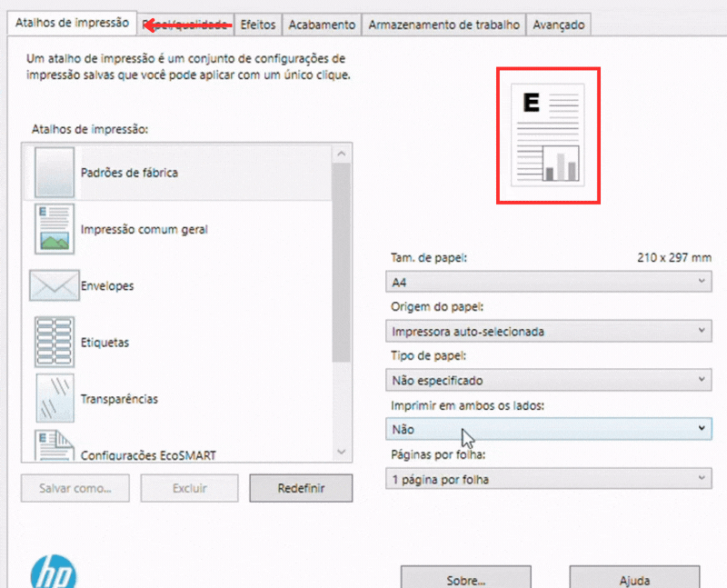
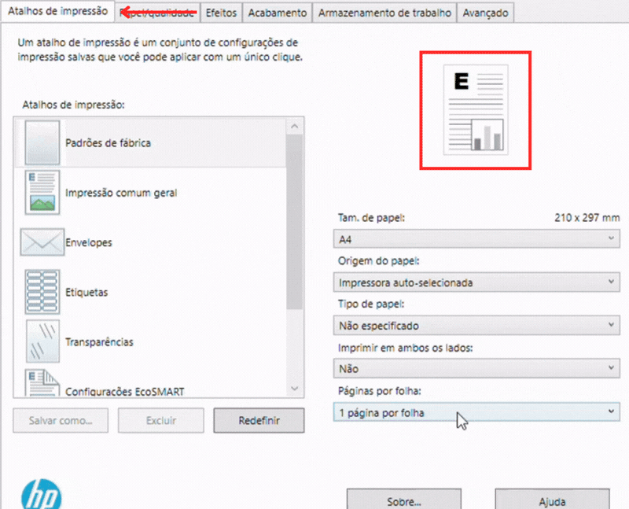
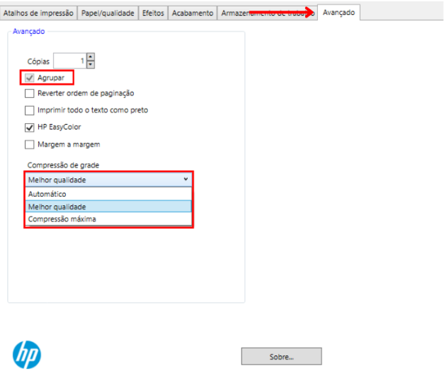
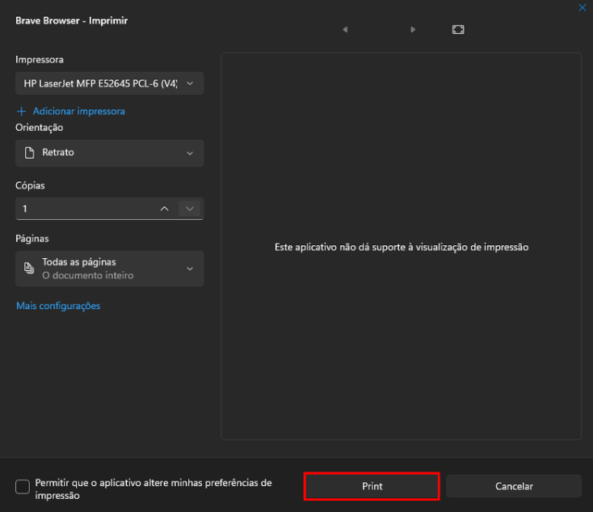

HP LaserJet MFP E52645
Impressão com acesso rápido a papel, bandeja, agrupamento e qualidade.
Iniciando a Impressão
Com seu arquivo aberto clique no ícone de impressora ou use o atalho Ctrl + P. O primeiro passo é selecionar a impressora correta no campo "Destino".

Caso a HP E52645 não apareça de imediato, clique em Ver mais... e selecione-a na lista.

Impressão Padrão
Se você deseja fazer uma impressão comum, basta clicar no botão Imprimir.
- Páginas: No personalizado você pode especificar quais páginas imprimir. "1-5, 7" para imprimir da página 1 até a 5 e também a página 7, pulando a 6.
- Tamanho do Papel: A impressora HP E42540 geralmente utiliza o tamanho A4.
- Frente e Verso: Escolha "Borda longa" para virar a página como um livro.

Impressão Avançada
Se precisar mudar a bandeja, agrupar cópias ou ajustar a qualidade, clique em Imprimir utilizando a caixa de diálogo de sistema para abrir o painel avançado da HP.

Selecione a impressora denovo e clique em Mais Configurações.

Configurações de Papel e Bandeja
Na primeira aba (Atalhos de impressão), você tem acesso rápido a funções muito úteis:
• Origem do papel: Escolha de qual bandeja a folha será puxada (Bandeja 1 para folhas avulsas na tampa frontal, ou Bandeja 2 para a gaveta inferior).

• Imprimir em ambos os lados: Selecione "Sim, virar" para ativar a impressão Frente e Verso automática (no padrão livro).

• Páginas por folha: Permite encolher várias páginas do arquivo para caberem juntas na mesma folha física.

Agrupar e Qualidade
Na aba Avançado, defina as cópias e marque Agrupar. No menu de qualidade, selecione Melhor Qualidade.
Se você for imprimir 3 cópias de uma prova de 5 páginas:
• Marcado: A impressora entrega as provas prontas (Páginas 1 a 5, depois 1 a 5 de novo).
• Desmarcado: A impressora solta três páginas "1", depois três páginas "2", obrigando você a separar tudo na mão depois.

Concluir
Confirme as alterações e clique em Print para iniciar a impressão.
